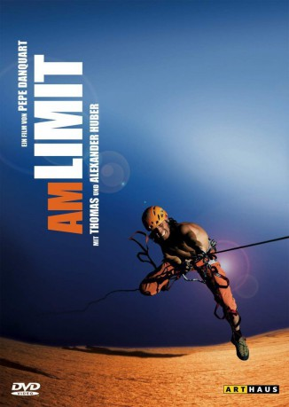

#860 Am Limit
 gesehen am 17.05.2016
gesehen am 17.05.2016
 
 IMDB-Wertung: 7.2 / 10
IMDB-Wertung: 7.2 / 10  Metascore: 71
Metascore: 71 
Am Limit ist ein Dokumentarfilm über extremes Klettern.Pepe Danquart zeigt in dieser Sportdokumentation die Brüder Thomas und Alexander Huber beim Klettern in Patagonien und auf dem Granitfelsen „El Capitan“ im Yosemite Valley (USA). Einen wichtigen Teil nimmt der Versuch einer Speedbegehung der 1000 Meter hohen Route The Nose ein, bei dem die beiden Sportler den damaligen Geschwindigkeitsrekord von 2:48:30 Stunden, welcher im September 2002 von Hans Florine und Yuji Hirayama aufgestellt worden war, brechen wollen.
Jahr: 2007
Dauer: 95 Minuten
FSK: 6
Land: Deutschland Studio: Kinowelt FilmverleihTonspuren:
Untertitel:
Auflösung: 1080p (1920x1080) Größe: 13004 MB
Genre: Dokumentation, Sport
Regisseur: Pepe Danquart
Drehbuch: Pepe Danquart
Soundtrack: Dorian Cheah, Christoph Israel
Darsteller:
- Thomas Huber als Himself
- Alexander Huber als Himself
- Dean Potter als Himself
- Chongo als Himself
Datei: X:\Dokumentationen\Sport\Am Limit (2007, FSK6, 1920x1080).mkv seit 08.04.2015
Festplatte: HD Serien(SU-Z)+Dokus+Musik
 Es gibt insgesamt 34 Filme in der Gruppe 'Dokumentationen\Sport'
Es gibt insgesamt 34 Filme in der Gruppe 'Dokumentationen\Sport'